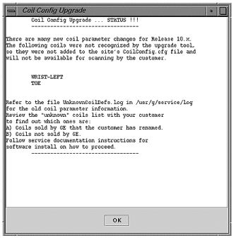

Illustration 12: Coil Config Upgrade Status Message with Unknown Coils Found

If unknown coils are found, finish the software load then go to Unknown Coils Configuration Procedure Coil Configuration Updates for help in adding these unknown coils.